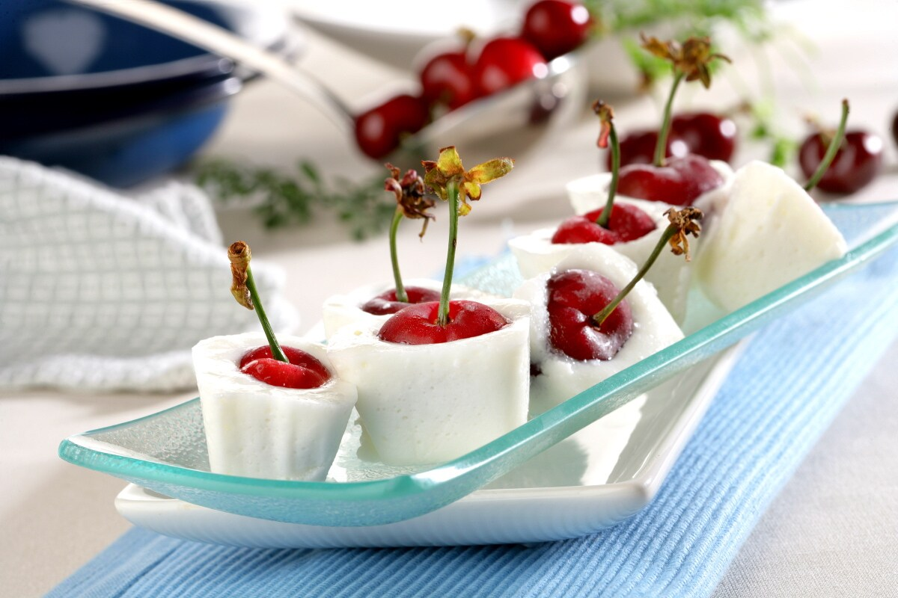

Inicio
Sobre mí
Recetas
Contacto
Otras Cosas
Dados de Pastel Fresco con Yogur

⏰
Tiempo total:
2 horas
Ingredientes
24 cerezas
3 yogures naturales
15 ml de ron blanco
2 yemas de huevo
100 g de azúcar
200 ml de leche evaporada
4 hojas de gelatina
Preparación
1.
Lavar las cerezas y secarlas.
2.
Hidratar la gelatina en agua fría durante 5 minutos.
3.
Blanquear las yemas con el ron y el azúcar durante 3 minutos a 90ºC.
4.
Añadir la leche evaporada y la gelatina. Remover 30 segundos a 90ºC y dejar atemperar.
5.
Incorporar los yogures y mezclar. Verter en una cubitera, colocando una cereza en cada cubito.
6.
Enfriar en la nevera y después congelar durante 1 hora y media. Desmoldar y servir.
Autor: Postres Modernos
Consejos:
Acompaña con una salsa de frutas para realzar el sabor.
Recetas